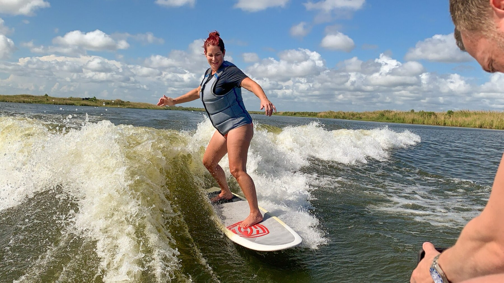
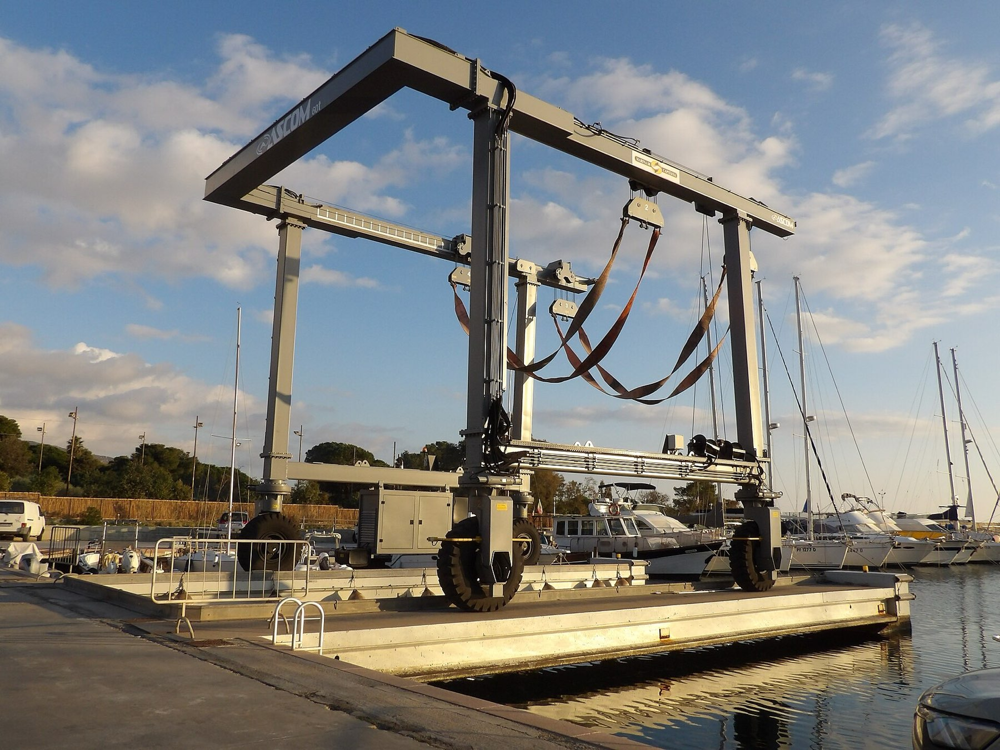
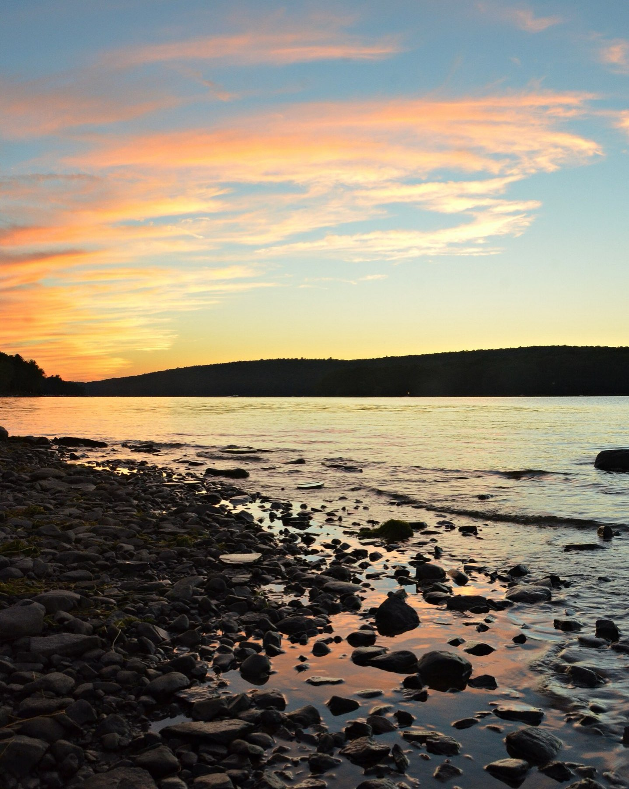
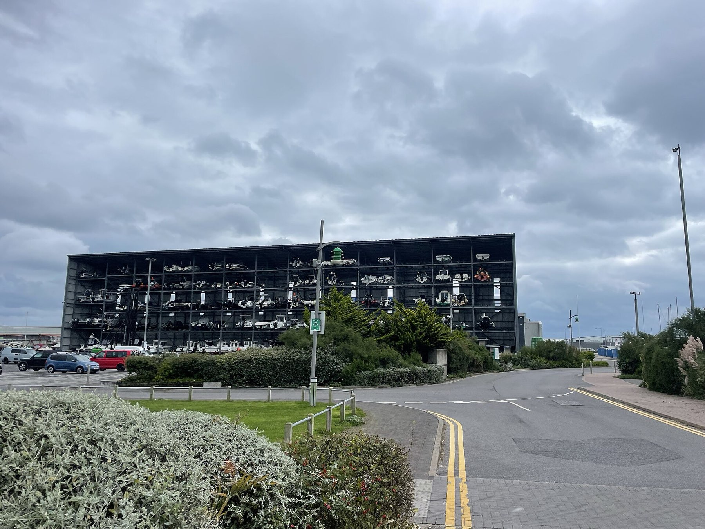

Lake Life
Make the most of Wallenpaupack.
Guides, events and local know-how from the team that's been on this lake for 50 years.
Event
The Marina Crawl
Capri Marine's on-the-water tradition. [Event details placeholder: date, route, how to join.]
Guides & Articles
From the dock
 Buying Guide
Buying GuidePontoon or bowrider: which is right for Lake Wallenpaupack?
How your crew, your cove and your weekend plans point to the right boat.

WatersportsWakesurfing 101 on the Chaparral 23 Surf
Setting up the wave, safe surf etiquette and where to ride on the lake.

MaintenanceYour fall winterization checklist
What our certified techs do, and what you can do before drop-off.

LocalBest sunset coves on Lake Wallenpaupack
Our team's favorite spots to drop anchor at golden hour.

StorageDry stack vs. slip vs. trailer: what it really costs
A straight comparison to help you plan the season.
 New Owners
New OwnersYour first season: 10 things new boat owners ask
Answers to the questions we hear most at delivery.
Mockup note: articles are planned Phase 3 content (FAQ articles for AEO and blog posts for SEO).